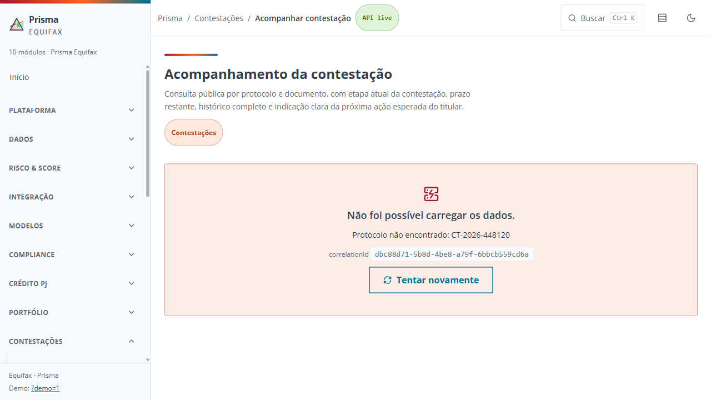
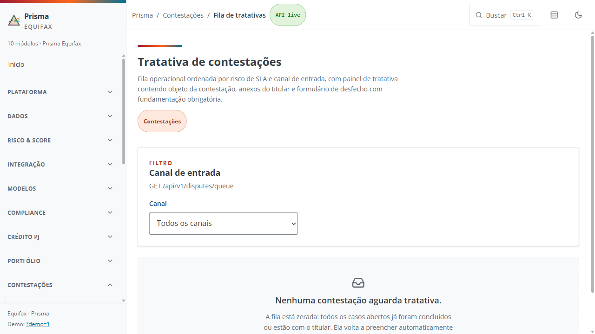
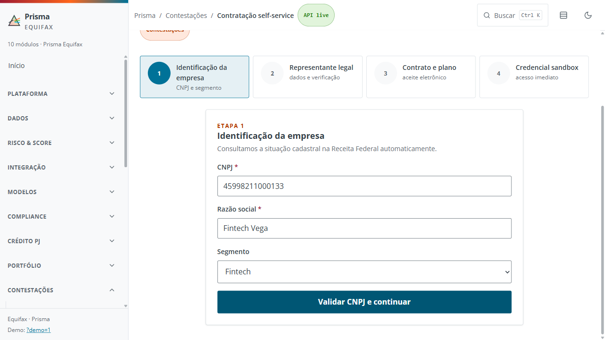
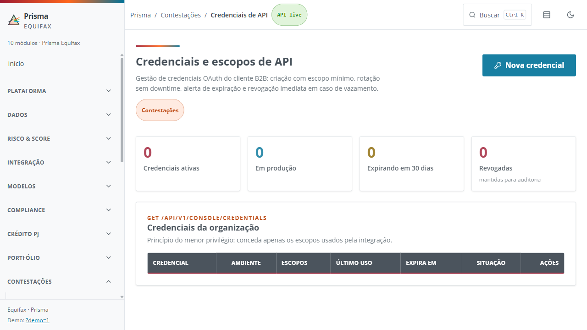

01
Veredito executivo
GO lab live (após 1 ciclo de self-healing).
FE VITE_DATA_MODE=live · Java :8080 · Postgres Supabase.
Badge UI API live. Fila operacional vazia; protocolo mock CT-2026-448120 não existe no banco (404/empty — T-01 negativo live).
O-01 falhou no complete: FE mandava plan UI escala; BE exige API-CREDITO-2026.07.
GO → Sofia em b2bConsole.ts → reteste O-01 passed (5,1 s).
Lab ≠ DoD (actuator health 503 parcial; OIDC off só com profile local).
10Cenários BDD
10Constantes DataForge
4/4E2E após heal
6Skipped
8,4sO-01 reteste
1Self-heal GO
02
Agentes da esteira
GherkinFlow→
DataForge→
Playwright→
Self-Heal GO→
O-01 reteste
| Agente | Papel | Status | Entrega |
|---|---|---|---|
| GherkinFlow | BDD live · 10 cenários (3P / 6N / 1R) | DONE | gherkinflow/contestacao/CONTESTACAO-BDD-v4.md |
| DataForge | Constantes JS · sem SQL fictício | DONE | dataforge/contestacao/contestacao.data.v4.js |
| Playwright | Spec v4 headed Chrome | DONE | playwright/contestacao/specs/contestacao-qa-v4.spec.ts |
| Self-healing + Sofia | O-01 complete · contractVersion | GO · corrigida | frontend/src/api/b2bConsole.ts |
03
Cenários BDD (GherkinFlow v4 live)
Ativos E2E: T-01, Q-01, O-01, C-04. Massa mock de fila/protocolo não está no banco live.
Acompanhar contestação
| # | Tipo | Funcionalidade | Então (live) |
|---|---|---|---|
| T-01 | Negativo | Protocolo de demo ausente no banco não abre o acompanhamento | erro/empty após CPF + Consultar |
| T-02 | Negativo | Protocolo ou documento inválidos bloqueiam a consulta | skip |
Fila de tratativas
| # | Tipo | Funcionalidade | Então (live) |
|---|---|---|---|
| Q-01 | Regressivo | Fila live sem casos informa fila zerada | Nenhuma contestação aguarda tratativa |
| Q-02 | Negativo | Fundamentação curta impede concluir | skip |
| Q-03 | Negativo | Filtro de canal sem casos | skip |
Contratação e console
| # | Tipo | Funcionalidade | Então (live) |
|---|---|---|---|
| O-01 | Positivo | Contratação até credencial sandbox | Contratação concluída · secret uma vez |
| O-02 | Negativo | CNPJ incompleto bloqueia etapa 1 | skip |
| C-01 | Positivo | Consumo e fatura INV-2026-07-001 | skip (API 200 no smoke) |
| C-02 | Negativo | Alerta fatura vencida | skip · fatura live = OPEN |
| C-04 | Positivo | Atalho Gerenciar credenciais | rota /b2b/credenciais |
04
Resultado Playwright (oficial pós-heal)
| ID | Cenário | Status | Nota |
|---|---|---|---|
| T-01 | protocolo demo ausente no banco | passed | L1: gate CPF (href não seta :protocolo) |
| Q-01 | fila live zerada | passed | 2,4 s |
| O-01 | onboarding até sandbox | passed | após GO · 5,1 s |
| C-04 | atalho credenciais | passed | 2,9 s · console usage 200 |
| T-02 Q-02 Q-03 O-02 C-01 C-02 | catálogo | skipped | volume enxuto |
Oficial: 19/08/2026 ~10:09 BRT · 4 passed · 0 failed · 6 skipped. Recapture de evidência (~10:15) re-falhou O-01 no start — CNPJ Fintech Vega já COMPLETED no banco (efeito colateral do heal). Não reabre GO.
05
Self-healing O-01
| Campo | Valor |
|---|---|
| Causa raiz | FE enviava draft.plan = escala; BE CompleteOnboardingService.CONTRACT_VERSION = API-CREDITO-2026.07 |
| Camada | L2 app (Sofia) — não spec |
| Fix | completeOnboardingLive manda a versão contratual do BE |
| Arquivo | frontend/src/api/b2bConsole.ts |
| Gate | GO humano · 19/08/2026 |
06
Evidências (screenshots v4)




07
Artefatos
| Tipo | Caminho |
|---|---|
| Este consolidado live | docs/qa/outputs/qa-contestacao-esteira-v4.html |
| Consolidado mock (histórico) | docs/qa/outputs/qa-contestacao-esteira-v2.html |
| BDD v4 | docs/qa/outputs/gherkinflow/contestacao/CONTESTACAO-BDD-v4.md |
| Massa v4 | docs/qa/outputs/dataforge/contestacao/contestacao.data.v4.js |
| Spec v4 | docs/qa/outputs/playwright/contestacao/specs/contestacao-qa-v4.spec.ts |